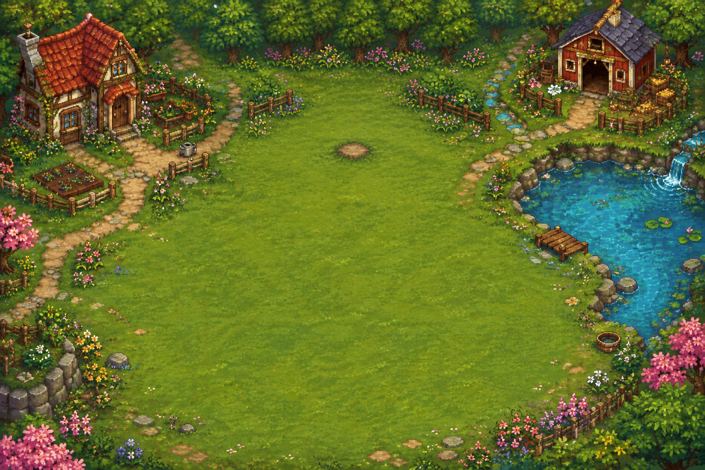

um dia de cada vez
O que vamos cultivar hoje?
150Love Coins
Salvo neste navegador

Escolha uma semente e toque num canteiro vazio.As plantas continuam crescendo enquanto vocês estão fora. O progresso fica neste navegador. Créditos

Escolha uma semente e toque num canteiro vazio.As plantas continuam crescendo enquanto vocês estão fora. O progresso fica neste navegador. Créditos